Settings and Appearance
The Settings refer to options that are applicable throughout the entire LemmaLoom application. This includes the theme, language of the interface, transcription model, personal exclusion patterns, reader presentation, and color and style of four lenses.
However, the language of individual documents, lenses of a document, and excluded text in documents all fall outside of the scope of this definition.
The Settings window
To access Settings, choose LemmaLoom ▸ Settings… or hit ⌘,.
On the left sidebar of Settings are listed three panes, namely General (gear icon), Reader (book icon), and Lenses (icon of a circle on a square). The first time you access Settings after LemmaLoom launches, the General pane will appear.
| Pane | Sections | What they set |
|---|---|---|
| General | Appearance, Language, Transcription, Exclusion Presets | The theme, the interface language, the speech recognition model, and your own patterns for leaving text out of analysis |
| Reader | Typography, Page, Selection, Preview | The reader’s font, text size, and layout, the paragraph and sentence numbers beside the text, and how selections and audio playback are shown |
| Lenses | Word class, Grammatical function, Phrase, Morphology | The color and style of each aspect of these four lenses |
The changes you make to the settings take effect immediately in the Settings window and in every open document, except in the case of the interface language setting, which takes effect on your next launch of LemmaLoom.
Resizing the window by dragging its edges helps you make space when you have a large pane, for example the Lenses pane. If the pane height exceeds that of the window, the extra part is scrollable.
Settings changes take effect immediately (see Chapter 23, Undo and Redo). Reverting a change entails selecting its previous state or clicking a reset button, such as Reset All to Defaults at the top of the Reader and Lenses panes. For all other settings, this chapter gives the default values.
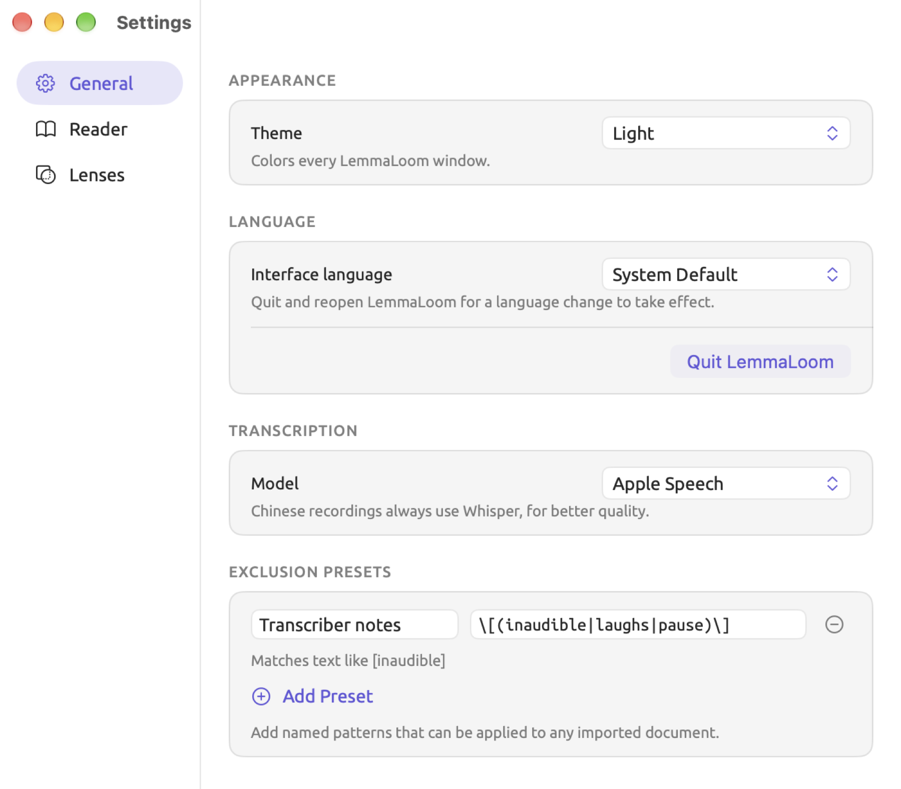
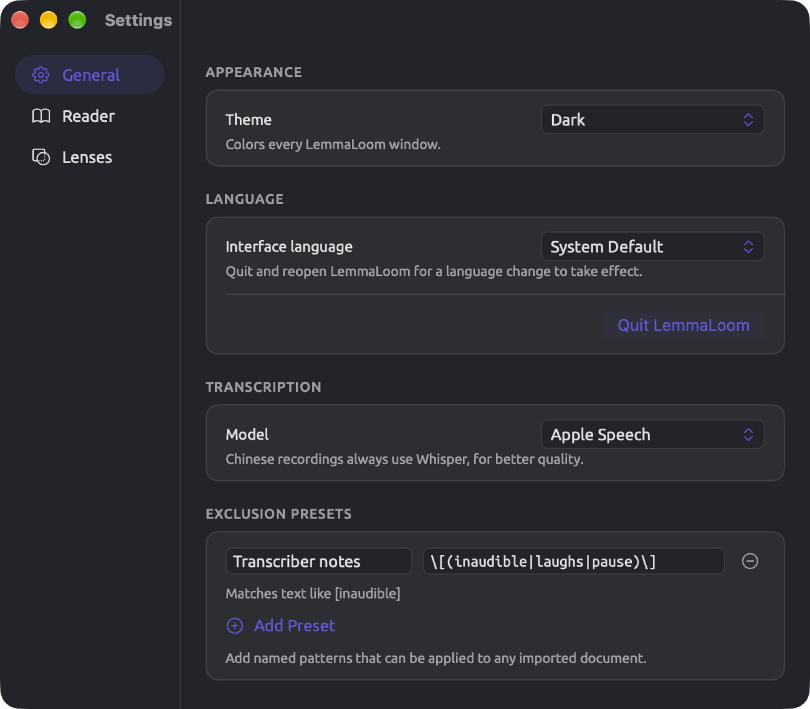
Themes
Theme refers to the set of colors used for the entire app interface. Theme controls whether your windows are light or dark, the colors of your window bars and side panels, the paper color and ink color of the reader, and many other things. Your accent color, which determines the color of active selections like the selected Settings sidebar pane or the Scroll with audio button while it is on, is determined by your theme as well.
There are eleven themes available in LemmaLoom:
| Theme | Light or dark | Colors |
|---|---|---|
| System | follows macOS | the standard macOS colors, light or dark as macOS is set |
| Light | light | the standard light macOS colors, even when macOS is dark |
| Dark | dark | the standard dark macOS colors, even when macOS is light |
| Cream | light | dark brown text on warm off-white, with a brown accent |
| Solarized Light | light | gray-blue text on pale cream, beige bars, a blue accent |
| Solarized Dark | dark | pale gray text on deep blue-green, a blue accent |
| High Contrast | light | black text on white, black dividing lines, a deep blue accent |
| High Contrast Dark | dark | white text on black, white dividing lines, a yellow accent |
| Protanopia | follows macOS | the standard macOS colors, lens and code colors adjusted for red-blind vision, a blue accent |
| Deuteranopia | follows macOS | the standard macOS colors, lens and code colors adjusted for green-blind vision, a blue accent |
| Tritanopia | follows macOS | the standard macOS colors, lens and code colors adjusted for blue-blind vision, an orange-red accent |
The theme you start with is System, which automatically toggles between light and dark modes depending on the mode of macOS, including when the macOS appearance is set to Auto.
System, Light, and Dark use the accent color provided by macOS for LemmaLoom, which defaults to violet-blue but could be different depending on your settings at System Settings ▸ Appearance. All other themes always use their own accent.
To change the theme:
- Choose LemmaLoom ▸ Settings… (⌘,) and click General.
- Under Appearance, open the Theme menu.
- Choose a theme.
All windows change simultaneously, including the Settings window.
Projectors fade light colors easily. With High Contrast selected on a projector display, the panels, lists, and dividers remain visible while the reader displays the same as in Light.
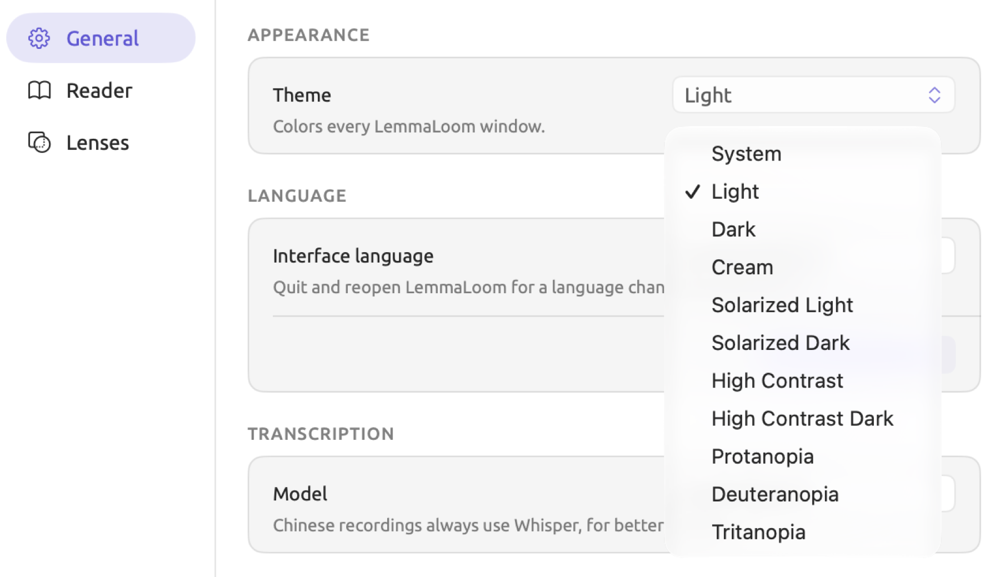
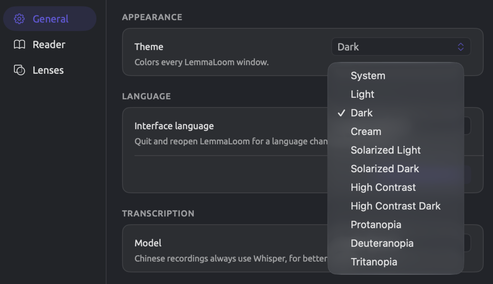
What a theme changes
A theme modifies the appearance of the following elements on every LemmaLoom window, including the Glossary and Analyzers windows:
- Elements rendered by macOS, such as scroll bars and text fields, are light or dark with the theme regardless of macOS settings.
- The window’s background and the band along its top assume the bar color according to the current theme. When using Cream, Solarized Light, and Solarized Dark, these colors will gradually transition between shades from top to bottom.
- Paper and text colors in the reader follow the theme, as listed under Reader colors in Chapter 5, Reading and Editing. In the reader, High Contrast looks the same as Light, and High Contrast Dark the same as Dark.
- Text selection highlight and the insertion point in text fields adopt either the accent color of the theme or, in System, Light, and Dark, the selection color of macOS.
- Headers of tables in the five themes with their own colors appear with the bar color, header lines assume the divider color of the theme, and rows alternate between two background shades.
- Dialogs, including Document Properties and Import Document, inherit paper and text colors from the current theme.
- The code editor within Window ▸ Analyzers changes its colors to correspond with the selected light/dark scheme according to the active theme.
- In full screen, the toolbar at the top of the screen displays with bar colors according to the active theme choice.
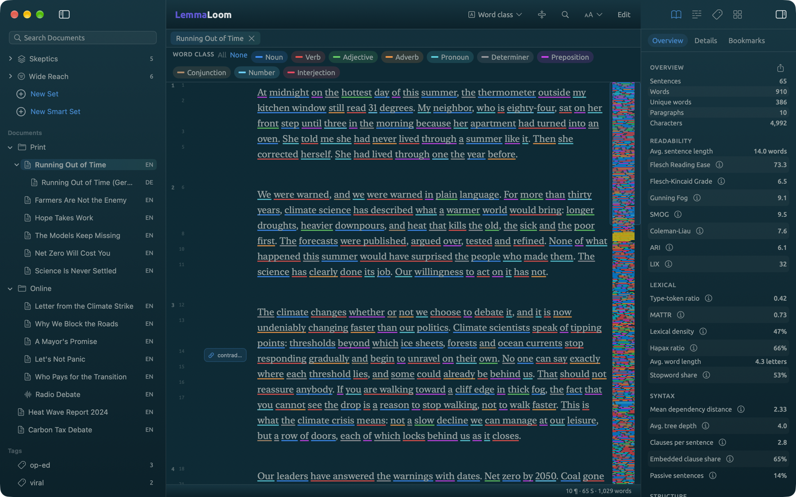
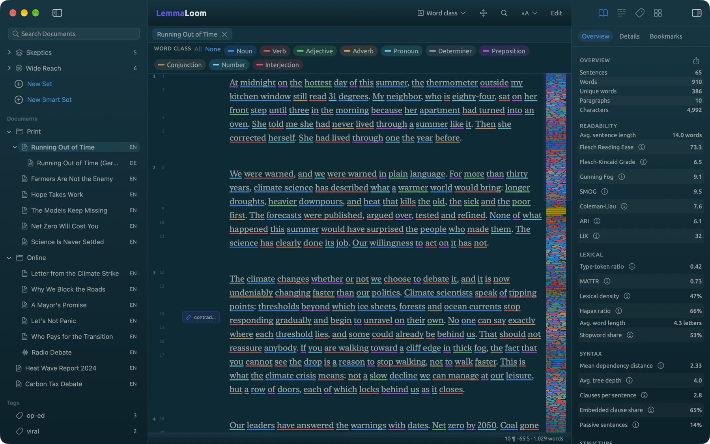
Colors that stay the same
Your codes and dictionary categories keep their colors in every theme except Protanopia, Deuteranopia, and Tritanopia, which adjust them for display. So do the aspects of a lens whose color you changed in the Lenses pane.
The default color palette of the lens aspects comes from macOS itself, using standard macOS colors that become a little bit brighter in dark themes. After selecting a color (whether it be changing an aspect’s color or choosing the color it already had), the choice remains constant. Resetting an aspect’s color from the Lenses pane makes it adjust again.
When switching between light and dark themes, check that your own colors read well on both. For instance, a light yellow color readable against the background of Solarized Dark fades away into obscurity against the stark white background of High Contrast.
The interface language
Menus, windows, and messages in LemmaLoom can be displayed in English, German, or Mainland Simplified Chinese. With System Default, the setting you start with, the system decides which one based on the priority listed under System Settings ▸ General ▸ Language & Region. When none of these languages are found in that list, then LemmaLoom reverts to English.
For selecting a language for the interface of LemmaLoom specifically, see below:
- Choose LemmaLoom ▸ Settings… (⌘,) and click General.
- Under Language, open the Interface language menu and choose English, Deutsch, or 简体中文. System Default follows macOS again.
- Click Quit LemmaLoom, below the note Quit and reopen LemmaLoom for a language change to take effect.
- Open LemmaLoom again.
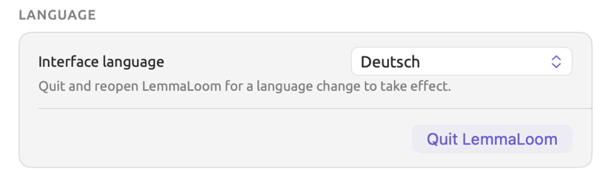
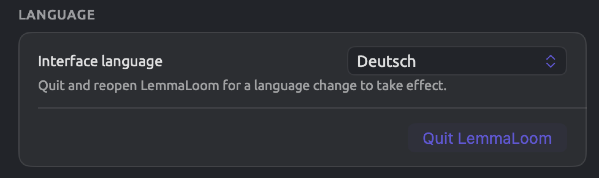
Each language is listed under its own name.
The interface language refers to the language that the menus, label texts, messages, names of lenses and their aspects, Glossary, and sample texts shown in the preview of the Reader pane use. As each document is indexed based on the language it is written in, even if you have the German interface language set, the English documents of “Climate Debate” are still indexed as being English. How LemmaLoom determines the language of each document is covered in How LemmaLoom decides the language in Chapter 21, Analysis and Indexing.
If you choose an interface language in this menu, the Translate dialog also proposes translating a document into that language first. For example, with Deutsch chosen, it would suggest translating an English article entitled “Net Zero Will Cost You” into German (see The Translate dialog in Chapter 9, Translations and Split View).
It decides the example project language. With File ▸ Import ▸ Example Project, LemmaLoom gives you “Climate Debate” with the English interface language, “Klimadebatte” with German, and “气候辩论” with Chinese (see The example project in Chapter 1, Introduction). Any copy previously imported into LemmaLoom retains its language.
The transcription model
Once you import an audio or video file, LemmaLoom automatically transcribes it for you using a speech recognition model (see How transcription works in Chapter 4, Importing Material). Choosing which model to use is done via the Model menu under Transcription:
| Model | Notes |
|---|---|
| Apple Speech | The setting you start with, and the fastest |
| Whisper Large v3 Turbo | The faster of the two Whisper models |
| Whisper Large v3 | Slower, and sometimes a little more accurate on difficult recordings |
Whisper is used for Chinese recordings even if you choose Apple Speech, since Whisper quality is better.
Switching which model is being used impacts the next recording imported. To test whether or not switching models would improve your results, try importing a short, difficult excerpt of audio using both models and comparing the transcripts side-by-side.
Exclusion presets
When importing a document or modifying its Document Properties, you may choose to ignore certain text patterns so as to prevent any kind of grammar analysis from occurring within them. Such patterns may involve timestamps, speaker labels, and many more forms of text (see Excluding text from indexing in Chapter 4, Importing Material). These patterns are expressed through regular expressions, which are concise representations of a form of text, such as any word surrounded by square brackets. There are five default presets in the Presets menu beside the field for entering your pattern.
An exclusion preset consists of a personally defined pattern, which is assigned its own name and stored inside the previously mentioned Presets menu.
Suppose that you had several transcripts typed out of radio conversations where pauses, laughter, and inaudible statements were transcribed with [pause], [laughs], and [inaudible], respectively (the notes should stay in the text, but are not actual speech). You could use these steps to create an exclusion preset for these three notes.
- Choose LemmaLoom ▸ Settings… (⌘,) and click General.
- Under Exclusion Presets, click Add Preset. A new row appears with two empty fields.
- In the Name field, type
Transcriber notes. This is the name the Presets menu shows. - In the Pattern field, type
\[(inaudible|laughs|pause)\].
On the line below the field is a description of what the entered regular expression matches, e.g., Matches text like [inaudible]. If the regular expression provided does not allow LemmaLoom to generate a sample text string that would match it, the line will say Valid pattern. An invalid pattern will feature faulty syntax, for example an unmatched bracket. An invalid pattern returns a response saying Not a valid pattern in red font.
Backslashes are used to match square brackets literally while the bars serve to provide alternatives within the parenthetical group. By inserting |crosstalk within the parentheses, you would match [crosstalk] as well. This particular pattern is case-sensitive and hence will only match [laughs] in lowercase.
The preset saves itself as you type. It shows up in the Presets menu on the import dialogs (Import Document, or Import from Web for a web page) and in Document Properties, right after the five default presets with a line between the two sets.
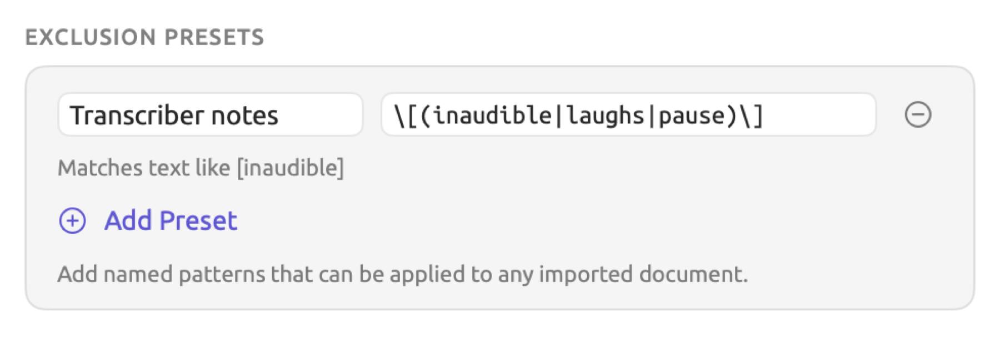


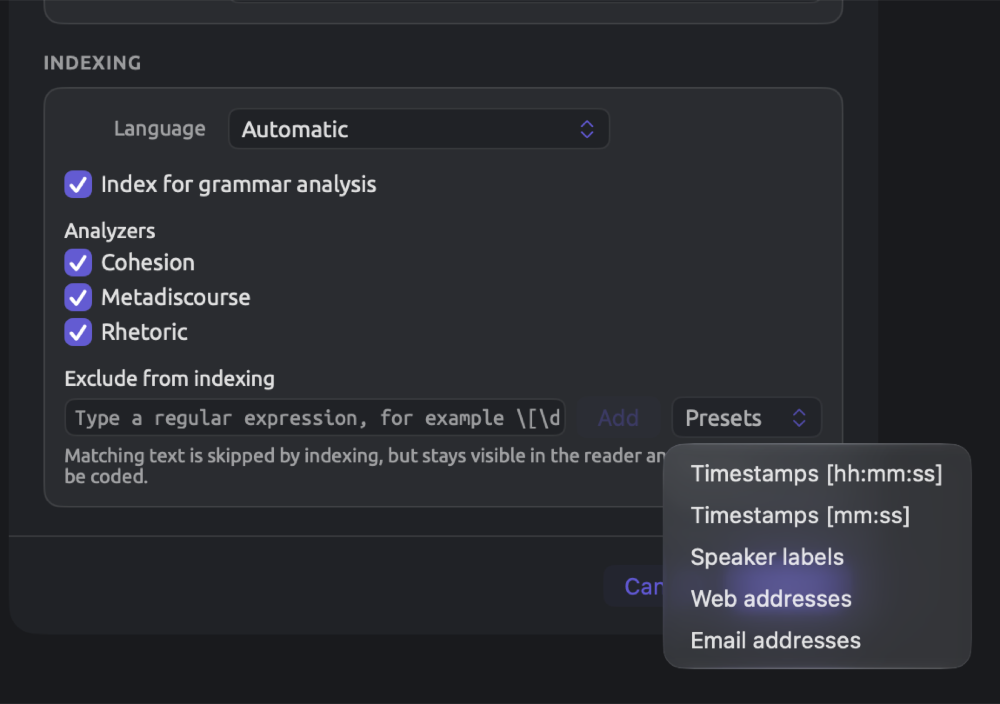
If the name and pattern of the preset are entered, an entry is added to the Presets menu. If the name or pattern does not exist yet, the entry stays in Settings until it is completed or deleted.
When selecting a preset from the Presets menu, the pattern for that preset is copied to the document. Any preset whose pattern has been copied to the document is disabled in the Presets menu; changing those patterns would require editing each document’s properties separately (Document Properties).
Choosing a preset with an invalid pattern will result in indexing the whole document. Check the line under your pattern before choosing a preset.
To delete a preset entry, click the little minus sign next to the entry (Remove preset). The entry disappears at once.
The Reader pane
The Reader pane controls how the reader presents text. The first two sections of the pane are the Typography and Page sections, which contain the same options as the Font, gutter, and text size menu found in the title band of the reader (see The title band in Chapter 5, Reading and Editing). The View ▸ Larger Text (⌘+), Smaller Text (⌘-), and Reset Text Size (⌘0) commands affect the exact same text size, and a change in one place shows in the others.
| Section | Row | Choices | Starts as |
|---|---|---|---|
| Typography | Font | System Serif, System Sans, System Rounded, System Mono, Georgia, Palatino, Baskerville, Times New Roman, Helvetica Neue, Avenir Next, Menlo | System Serif |
| Typography | Text Size | a slider from 70 to 200 percent, in steps of 10 | 100 percent |
| Page | Layout | Single Column, Two-Page Spread | Single Column |
| Page | Gutter Numbering | Off, Paragraphs, Sentences, Both | Both |
The gutter is the column that appears on the left side of your text, where the reader numbers the paragraphs and sentences of the document (see The gutter in Chapter 5, Reading and Editing). The curved arrow icon next to the text size percentage, Reset, resets the text to its default size of 100%. At 100%, the curved arrow is disabled, and hovering the mouse pointer over it shows Already default. To learn about fonts, sizes, layouts, and gutter numbers, see Changing how text is presented in Chapter 5, Reading and Editing.
Click Reset All to Defaults, which is located at the top of the pane, to reset every row of the pane at once to its initial value.
Selection
The Selection section determines how the reader displays your selections, as well as how it handles the rest of the text surrounding your selections.
| Row | Choice | What you see |
|---|---|---|
| Selected Text | Solid block | A rounded block in the text color, with the selected words in the paper color |
| Highlight | A light tint behind the selected words | |
| Head and Dependents | Arcs | A curved line from the selected word to its head and to each dependent, with a small arrowhead at the dependent’s end |
| Lines | The same connections drawn as square brackets above the text | |
| Labels | The name of each relation above the related word | |
| Highlight | The head tinted yellow and the dependents pale violet | |
| Off | The selection alone | |
| Surrounding Text | Fade | The rest of the document dimmed around the sentences that hold the selection |
| Light fade | The same, dimmed less | |
| Highlight sentence | The sentence with the selected word tinted | |
| Off | The whole document as usual | |
| Audio Playback | Spotlight | Everything except the passage being played dimmed |
| Solid block | The passage being played on a block of the accent color | |
| Highlight | The passage being played tinted lightly with the accent color |
The first option in every row is the default.
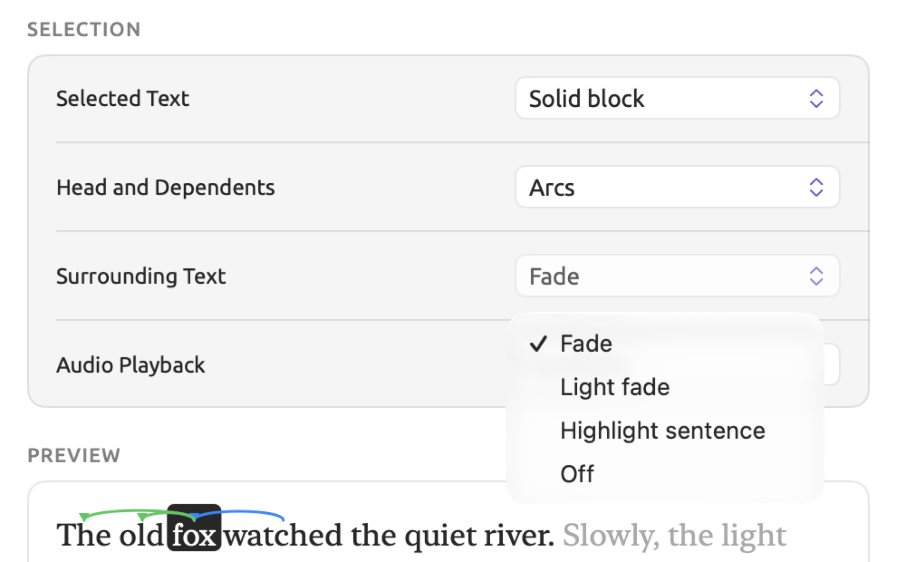
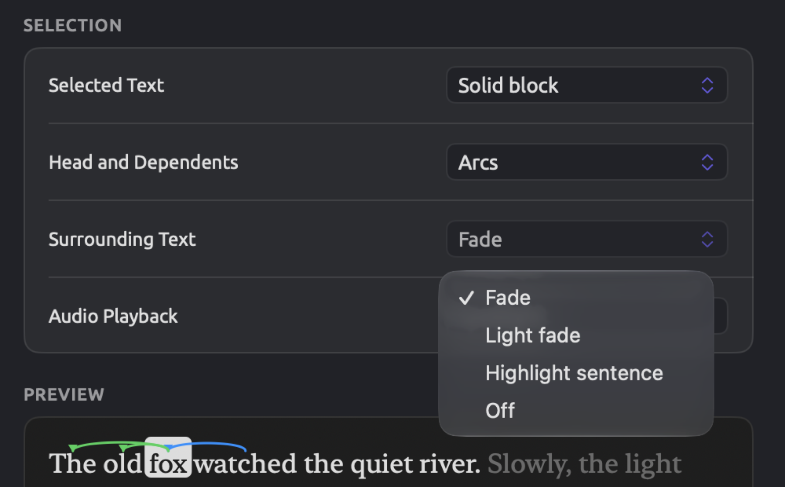
Head and Dependents applies when a single word has been selected. Head refers to the word that the current word belongs to within the grammatical structure of the sentence; for example, it can be the verb whose subject the selected word is. The dependents of the word are all the words attached to it. More about relations between words and their classifications can be found in Chapter 11, The Grammar Inspector. All arcs, lines, and labels are colored according to the Grammatical function lens defaults.
In Preview, which can be seen at the bottom of the pane, the passage is displayed as The old fox watched the quiet river. and fox is selected. The word watched is the head of fox since fox is its subject. The dependents of fox are The and old. When Labels is chosen, the preview will show labels above watched (▲ nsubj, nominal subject), above The (det, determiner), and above old (amod, adjectival modifier). Labels represent the relationship between each word and fox in terms of grammatical functions, and the ▲ shows the head. German documents use other labels. For example, nsubj becomes sb.
With Surrounding Text, you also control how a passage is shown when navigating to it, for example, via a query hit. If you pick Light fade or Fade, the surrounding text fades out; with Highlight sentence or Off, the passage gets highlighted in light yellow instead.
Audio Playback applies only when the reader follows a recording (Scroll with audio toggle on in the player bar; see Following the transcript in Chapter 5, Reading and Editing). Depending on the selected setting for Surrounding Text, Spotlight fades the rest of the text more or less. Light fade reduces the fading effect, and the other options fade as much as Fade.
The preview
At the bottom of the pane is where you will see Preview, which shows you two brief snippets of text that have been styled according to your preferences (font, text size, and theme). The first snippet contains a selected word with its head and all its dependents. The second snippet contains the text as it looks when you play it. Both change as you change the rows above, and their text is in the interface language.
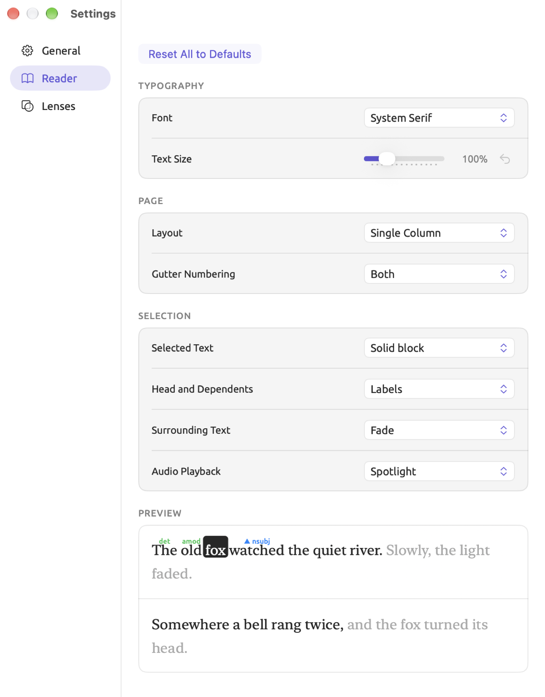
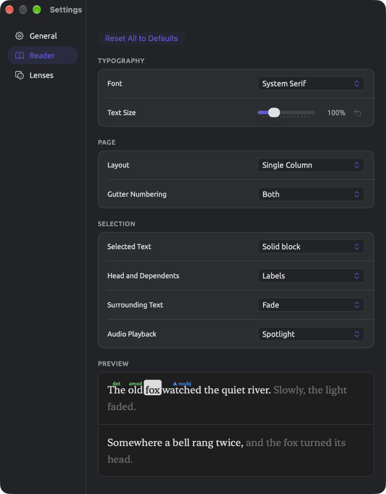
The Lenses pane
A lens annotates your documents’ words, categorizing based on something like word class (refer back to Chapter 6, Lenses). Aspects are categories of a particular lens, like Noun under Word class. In the Lenses pane, the colors and styles for each aspect for four built-in lenses are configured. This pane becomes helpful in cases where two aspects appear similar visually, or when working simultaneously with multiple lenses.
There is a distinct section for each of the four lenses in the Lenses pane:
| Section | Rows | Style at the start |
|---|---|---|
| Word class | Noun, Verb, Adjective, Adverb, Pronoun, Determiner, Preposition, Conjunction, Number, Interjection | Underline |
| Grammatical function | Subject, Object, Predicative, Complement, Adjectival, Adverbial, Appositive, Agent, Conjunct, Connector | Underline |
| Phrase | Noun phrase, Verb phrase, Prepositional phrase, Adjective phrase, Adverb phrase, Conjunction phrase, Interjection, Noun chunk | Highlight |
| Morphology | 20 rows, each named after a feature and one of its values, from Tense: Past to Gender: Neuter | Highlight |
The Morphology rows include Tense, Number, Degree, Verb form, Case, Mood, and Gender. Case, Mood, and Gender appear only in German documents, whereas the Morphology lens operates on both English and German documents. Words display only one morphological feature, which means that a German noun in the dative case displays just Case: Dative. See Morphology in Chapter 6, Lenses for more on this topic.
In contrast, other built-in lenses, such as Modality and Cohesion, come with predetermined colors. However, dictionary, query, and analyzer lenses obtain their colors from their dictionaries, queries, and analyzers, respectively.
The aspect name, style menu, and color well are provided in each row along with a reset button once the aspect has been modified. Four different styles, accompanied by their respective icons, can be selected using the style menu.
| Style | How an annotated word looks |
|---|---|
| Highlight | A pale band of the color behind the word |
| Underline | A line in the color under the word |
| Text color | The letters in the color |
| Bold | The letters in bold and in the color |
It’s the style itself that dictates whether the color will appear prominently enough. In Highlight, you’ll get a subtle wash of the color over the background, while a lighter color won’t necessarily stand out much at all. In Text color and Bold, the actual text characters will adopt the full force of the color, requiring it to contrast sharply against your theme’s paper. See also Lens colors and styles in Chapter 6, Lenses.
Changing an aspect
The example project includes “Running Out of Time (German)”, which is the translation of “Running Out of Time” into German. It is useful for studying the dative case, which marks the indirect objects in German as well as the nouns following words like mit. Assuming you haven’t imported “Climate Debate” already, import it via File ▸ Import ▸ Example Project. Each of the cases begins as a pale highlight in the Morphology lens. To differentiate the datives, follow along:
- Choose LemmaLoom ▸ Settings… (⌘,) and click Lenses.
- Scroll down to the Morphology section and find the row Case: Dative.
- Open its style menu, which shows Highlight, and choose Bold.
- Click the color well (the color swatch) beside it. In the macOS color picker that opens, choose a dark red.
- Open “Running Out of Time (German)” and enable Morphology in the lens menu (see The lens menu in Chapter 6, Lenses).
Datives are displayed in bold dark red now, whereas the rest of the cases retain their pale highlighting. Changes to Word class, Grammatical function, and Phrase aspects also apply to the Glossary (Help ▸ Glossary), as it displays each tag or term representing one of those aspects in that aspect’s coloration and style. The default coloration of the lenslets in the legend above your text remains unchanged, and therefore the Case: Dative lenslet retains its orange appearance. These exact same procedures apply to any aspect of the four lenses.
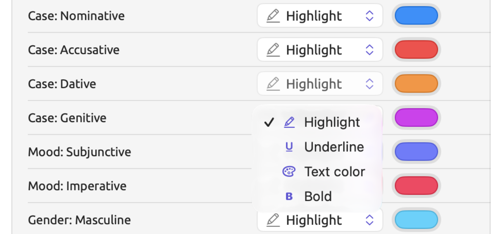
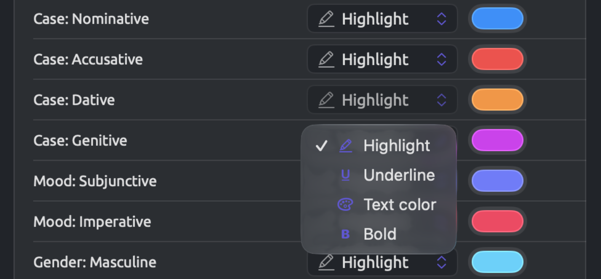
Going back to the defaults
Your modified aspects will receive a reset button, a curving arrow at the end of their rows. Clicking on the button resets them back to default colors and styles.
Reset All to Defaults, which appears at the very top of the pane, resets all aspects in all four lenses. The reset is permanent.
Where settings are stored
Any changes you make within the Settings window affect only the Mac that you are working on. The library, containing your projects (see Where work is stored in Chapter 2, Getting Started), will also retain your place within each project.
| Setting | Kept |
|---|---|
| Everything you choose in the Settings window | on the Mac |
| Scroll with audio, the size and position of the video, and whether it is collapsed | on the Mac |
| The divider between two documents in split view, the dividers inside analysis panels (such as the one between a query’s builder and its results), and how word sketches are displayed | on the Mac |
| Favorite projects, the project you had open, the tabs each project had open, and each document’s reading position, lenses, and inspector (whether it is shown, its width, and the active tab) | in the library |
Your projects, along with favorites, opened tabs, and reading positions, are all portable to another Mac with the library or restorable from an older backup copy. Settings, on the other hand, are per-Mac, and so you should personalize your choices on each Mac, including themes, fonts, and lens styles, if you want them to match.
When your coworker views the contents of your LemmaLoom archive or REFI-QDA project, everything is seen using their own Mac’s settings, namely the document appearance based on themes, fonts, and lens styles (see Chapter 22, Exchanging and Exporting).